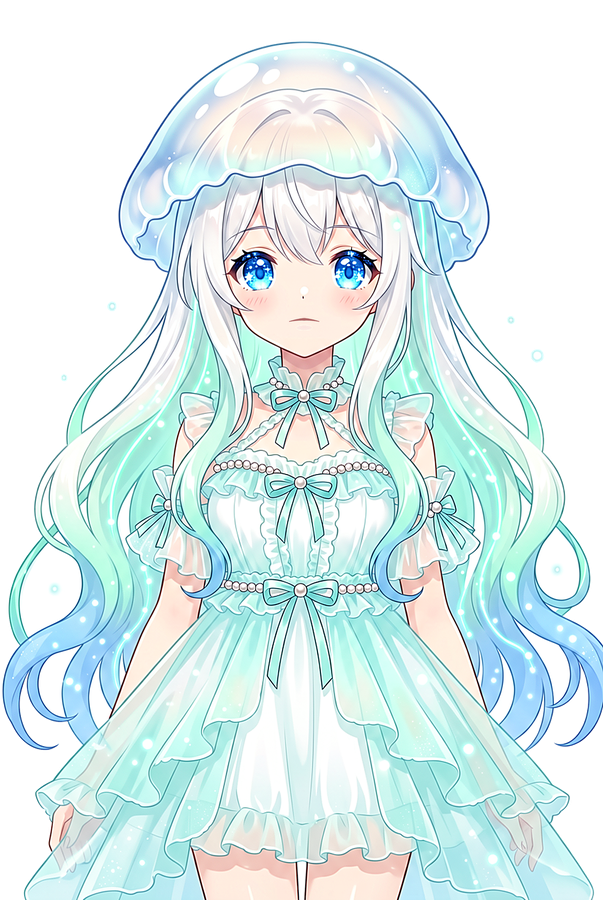

AI VTuber ・ 解説ショート動画
URLを1つ渡すだけ。Kurageさんが解説ショート動画にします。
Kurage Montage に、X投稿・YouTube・ブログ/記事・PDF のURLを渡すと、 エクスブリッジのAI VTuber・Kurageさんがその内容を読み解き、シーンを構成し、台本を書いて、 日本語の解説ショート動画にナレーションまで付けて仕上げます。編集も台本書きも不要です。

Kurageさん
エクスブリッジのクラゲAI VTuber。読み解いて、台本を書いて、話します。
仕組み
リンク1つから、完成したショート動画まで — 5ステップ。
1URLを渡すX投稿・YouTube・ブログ/記事・PDF。
2抽出・文字起こし動画は yt-dlp・fxtwitter・Kurage Voiceで文字起こし。記事/PDFは本文を直接抽出。
3シーン構成・台本ローカルLLMが、元ネタだけを根拠に12シーンのショート台本を作成。
4Kurageさんが動画化台本をVTuberモードのKurageさんへ渡して動画を生成。
5公開完成した動画がKurageさんの動画ページに並びます。
URLがあれば、なんでも
4種類の元ネタから、1本のショート動画に。
X投稿リンク先のポスト
YouTube字幕またはWhisper文字起こし
ブログ / 記事本文を直接抽出
PDF資料・レポート
“それっぽい動画”は作らない品質ゲート
kmontageは、質の低い動画を出すくらいなら止まります。
- 台本は必ず日本語・12シーンのショート。英語や短すぎる台本は作り直し。
- 汎用的な埋め草を排除。ぼんやりした一文や定型のタイトルは却下。
- すべての主張は元ネタに忠実であること。不誠実な台本はゲートで落とす。
- それでも忠実な台本にならなければ、ジョブは停止——動画は公開しません。
Kurageエコシステムの一員
本番稼働しているAIプロダクト群。